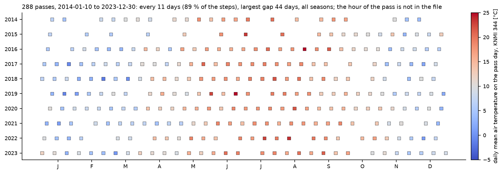
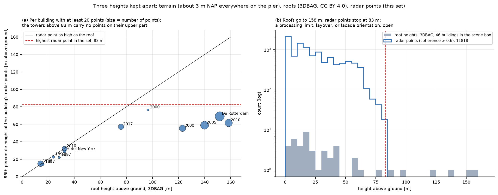
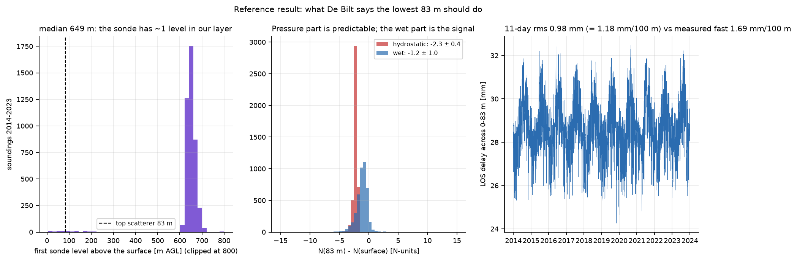

Data and method
One radar record, two weather records, one building register, and the chain of reasoning that turns a radar phase into a reading of the air.
The data
The test set covers the Wilhelminapier on the south bank of the Nieuwe Maas in Rotterdam: about 530 by 450 m of quays, a few old warehouses, and a row of towers built between 2000 and 2017, among them De Rotterdam (149 m) and the Maastoren (165 m). It was chosen because it has high-rise. It is a best case for the method, not a city average.
TerraSAR-X passed over it 288 times between 10 January 2014 and 30 December 2023, on a descending track. The interval is 11 days for 89 % of the steps, the largest gap is 44 days, and every season is covered about equally. The hour of the pass is not in the file; from the dawn-dusk orbit it should be early morning, but that is our arithmetic, not a confirmed value.
The file holds 20 594 persistent scatterers. For each it gives the position, several heights, a coherence, a quality number whose definition we do not have, the fitted rate, curvature and yearly wave of its motion, and the 288 displacements in millimetres along the line of sight, all zero on the first pass. Two conventions run through the site and neither is confirmed by the data's producer: a positive displacement is towards the satellite, and 10 January 2014 is the zero of every series, whether or not it is also the master image of the processing. There is also a reference point, one reflector against which every displacement is measured, and we do not know where it is, how high, or what it stands on.

Three heights
Three different things get called height, and mixing them is the classic error. The terrain: the file's ground model minus the geoid comes out at 3.0 to 3.5 m above sea level for every point, under the towers as much as on the quays, so it is a terrain model and heights above it are safe. The roofs: the national 3D register gives one height per building, 46 buildings inside the scene box, the tallest 158 m. The radar points: median 14.7 m above ground, half of them within 31 m of each other, five times more spread than the roofs.
No radar point is higher than 83 m, although the register confirms four buildings above 100 m in the scene. Three candidate causes, none confirmed: a height search window in the processing; layover; or upper facades with no surface facing the satellite steadily. The answer decides whether the ceiling of the method in this city is 83 m or 150 m.

The ground truth
Two weather records check the radar against the air. The De Bilt soundings, 4 318 of them in the public archive: launched at midnight 50 km away, with a first archived reading typically 650 m above the ground, so their value for our lowest 83 m is an interpolation. Over that layer the refractivity falls by 3.4 N-units on average, 2.3 of which is the predictable pressure part and 1.2 the wet part that varies. Their 11-day change of the layer delay, 1.18 mm per 100 m, is the reference size for what the radar should see. And KNMI Rotterdam, daily temperature and humidity, the stand-in for the temperature of the buildings, lagged by five days. The one fixed alternative to the balloon, the Cabauw tower, also stands in the countryside. The KNMI high-resolution sounding files, with a reading every few metres, exist and are the next thing to get.

The method
A radar signal is delayed by the air it crosses, and the delay is set by the refractivity of that air: the refractive index minus one, times a million, a number around 300 near the ground. Refractivity follows from what a balloon measures, with pressure and vapour pressure in hectopascal and temperature in kelvin:
N = 77.6 pd/T + 72 e/T + 3.75·105 e/T2The first term is the dry part, predictable from pressure; the last two are the wet part, where the variation is. The delay along the ray is the integral of N, the phase follows from the wavelength, and the slant path from the incidence angle:
d = 10−6 ∫ N ds ψ = 4π d / λ slant = zenith / cos 23°A hundred metres of ordinary air near the ground delays the signal by 31 mm; the whole atmosphere, straight up, by about 2.3 m of which less than 0.3 m is water vapour. Interferometry sees none of those totals, only how they differ between two points and between two passes.
Nothing in interferometry is absolute. Every phase is relative to a reference point in space and to a reference pass in time. Taking a high point minus a low point removes the reference point, the orbit and the air above both; taking this pass minus the first removes the topography and any constant. What survives is the change of the delay through the layer between the two heights, plus the change of the buildings themselves. The state of the first pass can be recovered from the stack afterwards.
With height levels at fixed steps and one refractivity per layer, the delay difference between a level and the reference level is the sum of the layers the ray crosses, so the system is triangular and solves from the bottom up. In the data so far the profile is a straight line with a fixed kink, so the honest product today is one layer mean per pass. Refractivity per layer is the paper's success criterion; splitting it into a dry and a wet part is the second step; pressure, temperature and humidity separately is the stretch goal and needs one more constraint, for example a surface temperature.
The residuals are made in the simplest defensible way: an offset, a trend and a yearly wave are fitted to every point's own ten-year series and what is left is kept. The trend absorbs the sinking and the wave most of the thermal expansion; neither is assumed, both are estimated per point. Two things this does not yet do: model the buildings individually, with the sideways term the findings found, and account for a reference point whose own motion is unknown. Before the inverse is trusted, the forward model will be run on known inputs, with the nuisances the real data has: noise, displacement, the cross-range position of a reflector, thermal expansion. That simulation has not been run yet.
The paper
The team writes one manuscript, Reconstruction of the near-surface atmospheric refractivity profile from satellite InSAR: potential and limitations, twelve student authors in alphabetical order with the supervisor and two co-supervisors, due 22 October 2026. Its draft is not on this site. Each section was set out as a question; where this site carries evidence for it, the table says where.
| Section | Its question | Evidence so far |
|---|---|---|
| 1 Introduction | Why does a city need repeated profiles of its lowest few hundred metres; who measures them today and how finely; what do we not understand about the urban heat island? | Home |
| 2 Theory | How does refractivity link to pressure, temperature and humidity and to the radar delay; which assumptions? | above |
| 3.1 Simulation | With real heights and simulated profiles, how many points are needed, and how do noise, displacement and thermal expansion affect the estimate? | heights prepared, not run |
| 3.2 Residuals | How to remove everything that is not the vertical stratification, and how to know it worked? | above, findings |
| 3.3, 3.4 Disentangling | Is there an elevation-dependent signal in the residuals; can pressure be isolated first? | findings |
| 4 Results | The data sets; what real soundings imply; do we see a signal; fog, frost, humid summer days | findings; special cases not started |
| 5 to 7 | Does it make sense; impact and limitations; conclusions | not started |
The manuscript's abstract speaks of 450 profiles between 2014 and 2024, where our record is 288 passes on one track. Whether the difference is the ascending track still to come is one of the open questions.
What is still open
Status as of 17 September 2026. Hover an item for what would settle it. The first group can only be answered by the producer of the point set.
- Why does no radar point sit above 83 m? It decides whether the ceiling of the method here is 83 m or 150 m.
- Which height datum, and which sign convention? Everything on this site rests on the reading we chose.
- Where is the reference point, how high, and on what does it stand? The largest single unknown in the retrieval.
- Is 10 January 2014 the master image? The master's own atmosphere sits in every difference.
- What is the local hour of the pass, and does the ascending track exist? Both would open comparisons we cannot make now.
- Was an atmospheric filter applied in the processing? It would change how the main result is read.
- Why are both coefficients 60 to 70 % of physics? Four candidate explanations, none excluded.
- Why does the open ground move in winter? Its 0.5 mm yearly term is the size of the signal we are after.
- What is the kink at 20 to 30 m in the binned profile? If it is air, the retrieval can become a profile.
- Which temperature does a building feel? The expansion term depends on the structure, not the air.
- Can the high-resolution soundings be obtained? Without them a profile shape cannot be checked.
- What would a boundary-layer meteorologist want from this? Three questions prepared, not yet asked.
Words, and what is on this site
A short glossary
| InSAR | Interferometric synthetic aperture radar: comparing the phase of radar echoes from many passes gives distance changes to a fraction of the 3.1 cm wavelength. |
| Scatterer | A piece of a building or pavement that returned a stable echo on every pass. |
| Line of sight | The direction from the satellite to the point, 23° from vertical here. All displacements are measured along it; blue in the maps is away from the satellite. |
| Refractivity, N | The refractive index of air minus one, times a million. One number for pressure, temperature and humidity together; humidity dominates the changes. |
| Height gradient, s(t) | For one pass, the slope of displacement against height across all points, in mm per 100 m. |
| Trend, yearly wave, fast signal | The three parts of s(t): the sinking of the north-east towers, the thermal expansion of the buildings, and what changes from pass to pass after both are removed. |
| Double difference | Two points minus each other, then two passes minus each other. What the points share and what does not change cancels. |
| Reference point, master image | The one reflector and the one pass everything else is measured against. Both unknown to us. |
| Layover | The top of a tall building imaged at the same range as ground far in front of it. One candidate reason nothing shows above 83 m. |
| Ascending, descending | The satellite's two directions of travel, looking from opposite sides. We have the descending track, from the east. |
| BAG, 3DBAG | The Dutch building register with outlines and construction years, and its 3D version with roof heights. Both open data. |
What may appear on this site
The radar point set was provided for the course and may not be passed on. Nothing here is a radar point. The animations and the 3D view are drawn from small tables of averages: cells on a fixed grid of 10 m, or 25 m for the sparser ground points, buildings, 10 m slabs of buildings, height bands and the whole scene, each a mean over at least 20 points. The positions that appear are those of public things, building outlines from the register and cells on a fixed grid. The script that writes these tables refuses anything smaller, and a second script checks every file before it is published.
A mean on its own hides how much the points behind it disagree, so every published mean now carries that disagreement with it: the spread of the rates inside the group and their tenth and ninetieth percentiles, the spread of the heights, and how far the points sit from their own mean on a single pass once each point’s offset, trend and curvature are removed. The animations and the 3D view can colour by that spread instead of by the mean, and the height bands are drawn with both bars: the thin one the spread of the points, the thick one the error of the band mean. The spread is measured on the detrended series, so it says how well the mean stands for its points on one pass rather than how differently they settle.